Conformance results
Version 0.2.0, measured 2026-10-11 16:24 UTC. 25 of 26 passed.
Each run plays the same script in Chrome and in Unreal from the same commit, with a fixed game clock, and compares the paired frames. A case passes when the pictures match (SSIM at least 0.9 and at most 2.5% of pixels clearly different for test cases; SSIM 0.7 and 20% for games), every Unreal frame after the game finishes loading draws at least what the browser drew, and neither side reports a JavaScript error.
| Run | Result | SSIM | Pixels differing % | PSNR dB | Coverage | Errors | JS ms/frame | Memory MB | Notes |
|---|---|---|---|---|---|---|---|---|---|
| basics | pass | 0.997 (low 0.996) | 0.72 (worst 0.72) | 42.3 | ok | 0, 0 | 613.56 | 3405 | |
| materials | pass | 0.988 (low 0.988) | 2.17 (worst 2.17) | 34.8 | ok | 0, 0 | 8.92 | 2906 | |
| textures | pass | 1 (low 1) | 0 (worst 0) | 49.8 | ok | 0, 0 | 483.62 | 3298 | |
| ktx2 | pass | 0.999 (low 0.999) | 0 (worst 0) | 51.5 | ok | 0, 0 | 11.65 | 2917 | |
| transparency | fail | 0.994 (low 0.994) | 7.26 (worst 7.29) | 33.3 | ok | 0, 0 | 0 | 2804 | 7.26% of pixels differ (limit 2.5%) |
| lines | pass | 0.992 (low 0.992) | 0.58 (worst 0.58) | 36.7 | ok | 0, 0 | 0 | 2793 | |
| billboards | pass | 0.973 (low 0.973) | 2.07 (worst 2.08) | 28.1 | ok | 0, 0 | 0 | 2802 | |
| shadows | pass | 0.997 (low 0.997) | 0 (worst 0) | 47 | ok | 0, 0 | 9.69 | 2923 | |
| fog | pass | 0.999 (low 0.999) | 0 (worst 0) | 47.7 | ok | 0, 0 | 7.57 | 2878 | |
| fogExp2 | pass | 0.999 (low 0.999) | 0 (worst 0) | 48.1 | ok | 0, 0 | 0 | 2810 | |
| ortho | pass | 0.998 (low 0.998) | 0 (worst 0) | 42 | ok | 0, 0 | 13.61 | 2924 | |
| instances | pass | 0.975 (low 0.975) | 0 (worst 0) | 41.5 | ok | 0, 0 | 0 | 2813 | |
| batched | pass | 0.999 (low 0.998) | 0 (worst 0) | 48.1 | ok | 0, 0 | 6.66 | 2914 | |
| churn | pass | 0.998 (low 0.997) | 0.1 (worst 0.21) | 49.3 | ok | 0, 0 | 8.68 | 2887 | |
| motion | pass | 0.99 (low 0.976) | 0.59 (worst 1.47) | 46.3 | ok | 0, 0 | 0 | 2816 | |
| skinning | pass | 0.999 (low 0.998) | 0.03 (worst 0.07) | 50.7 | ok | 0, 0 | 16.29 | 2889 | |
| gltf | pass | 0.998 (low 0.996) | 0.1 (worst 0.21) | 50 | ok | 0, 0 | 6.28 | 2899 | |
| postprocess | pass | 0.995 (low 0.995) | 0.15 (worst 0.23) | 41.3 | ok | 0, 0 | 0 | 2812 | |
| hooks | pass | 0.998 (low 0.997) | 0 (worst 0) | 47.8 | ok | 0, 0 | 0 | 2827 | |
| ui | pass | 0.997 (low 0.997) | 0.44 (worst 0.45) | 34 | ok | 0, 0 | 25.56 | 2896 | |
| input | pass | 1 (low 1) | 0 (worst 0.01) | 57.6 | ok | 0, 0 | 6.19 | 2893 | |
| timers | pass | 0.994 (low 0.969) | 1.3 (worst 6.41) | 45.4 | ok | 0, 0 | 0 | 2808 | |
| audio | pass | 1 (low 0.998) | 0.01 (worst 0.08) | 53.8 | ok | 0, 0 | 0 | 2810 | |
| orbit-demo | pass | 0.975 (low 0.974) | 0.53 (worst 0.56) | 33.5 | ok | 0, 0 | 0 | 2810 | |
| threejs-fps | pass | 0.953 (low 0.854) | 0.49 (worst 2.48) | 31.1 | ok | 0, 0 | 0 | 2859 | |
| threejs-pointerlock | pass | 0.993 (low 0.993) | 0 (worst 0) | 38.1 | ok | 0, 0 | 0 | 2826 |
Known differences
- transparency: WebGL blends transparent surfaces using sRGB values, and Unreal blends them in linear light. Over a dark background a transparent colour comes out brighter in Unreal, and over a light one darker. No single change to opacity matches both.
Side by side (browser left, Unreal right)
basics
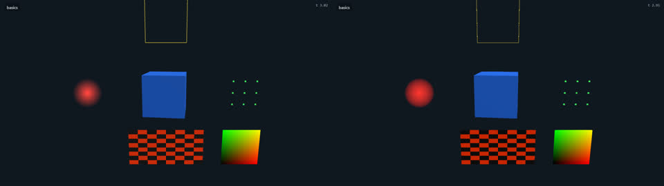
materials
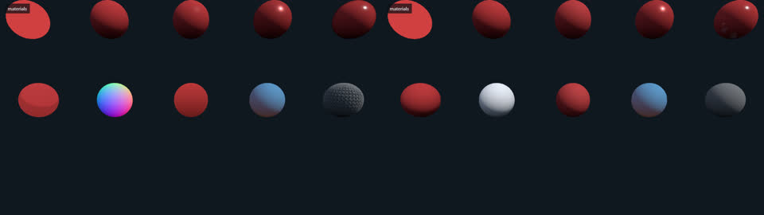
textures
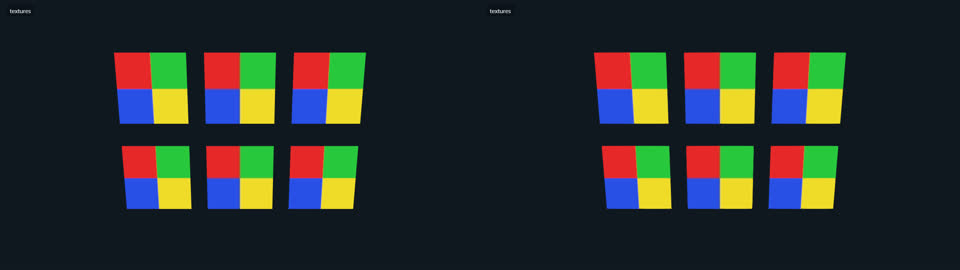
ktx2
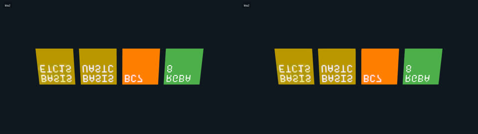
transparency
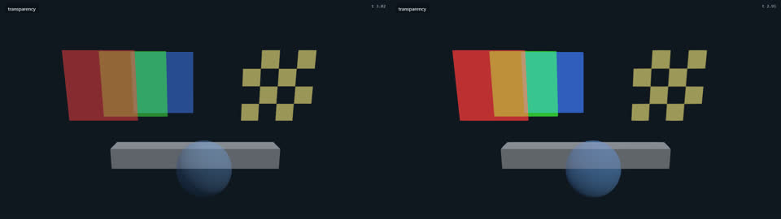
lines
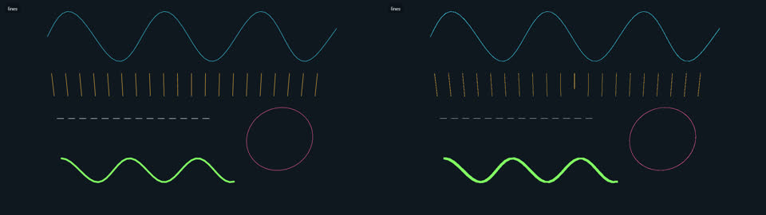
billboards
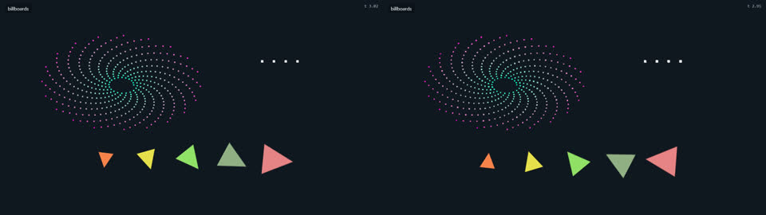
shadows
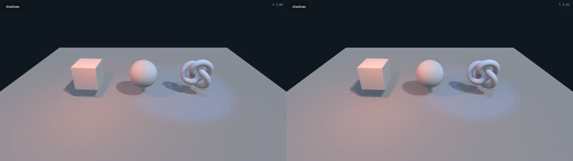
fog
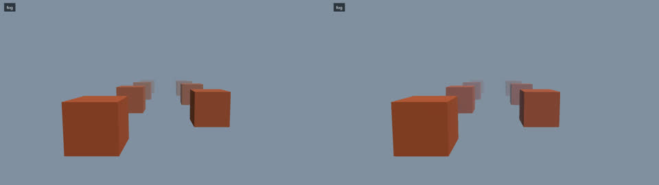
fogExp2
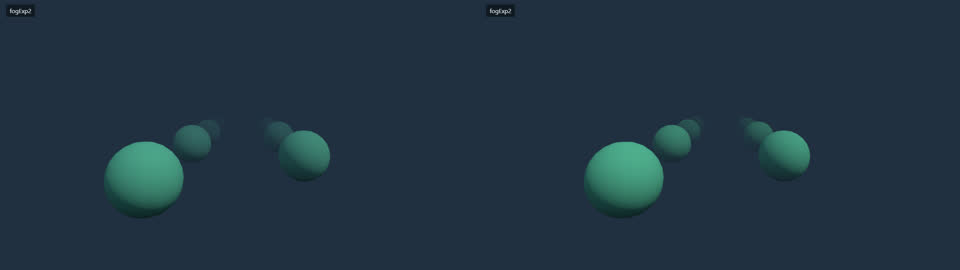
ortho
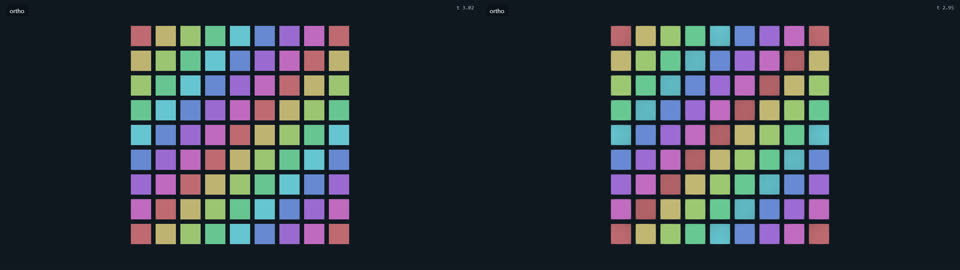
instances
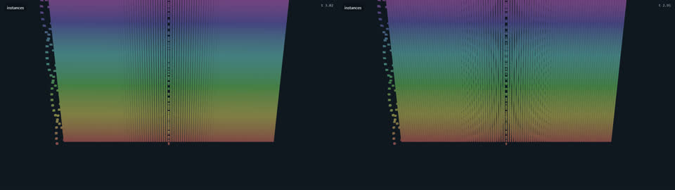
batched
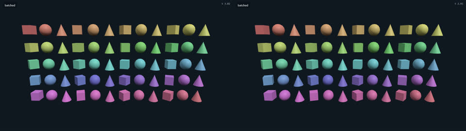
churn
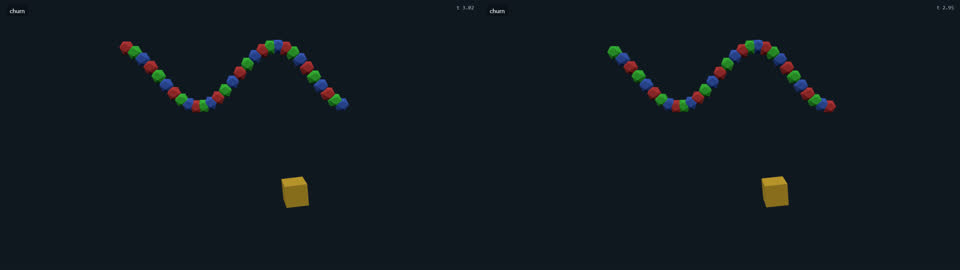
motion
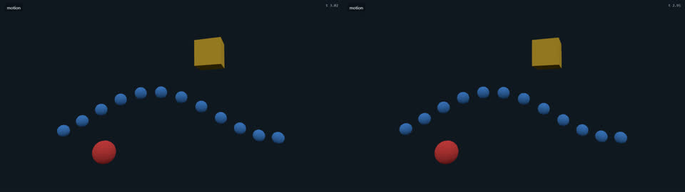
skinning
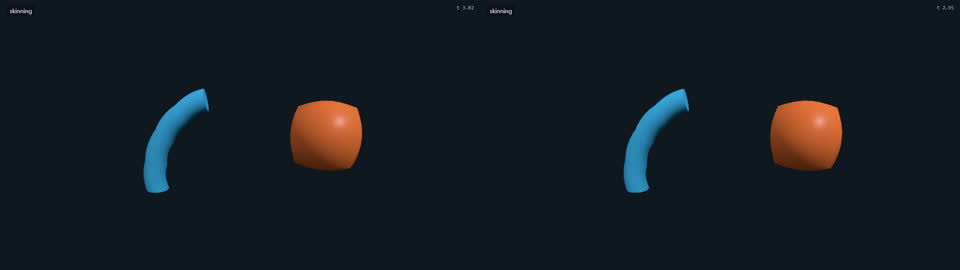
gltf
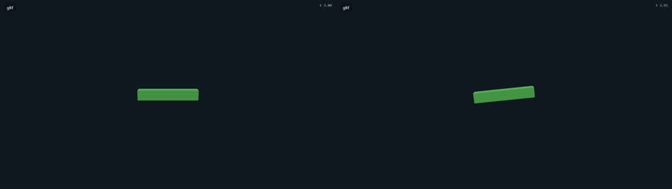
postprocess
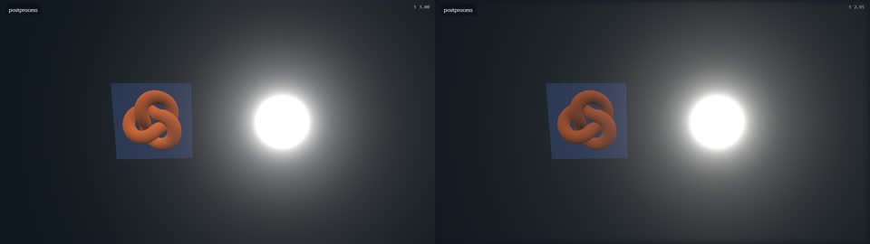
hooks
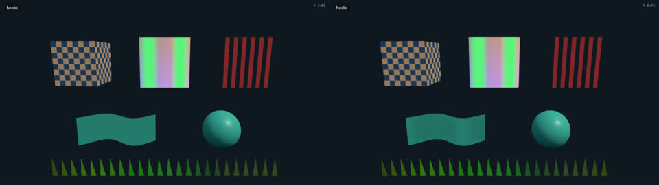
ui
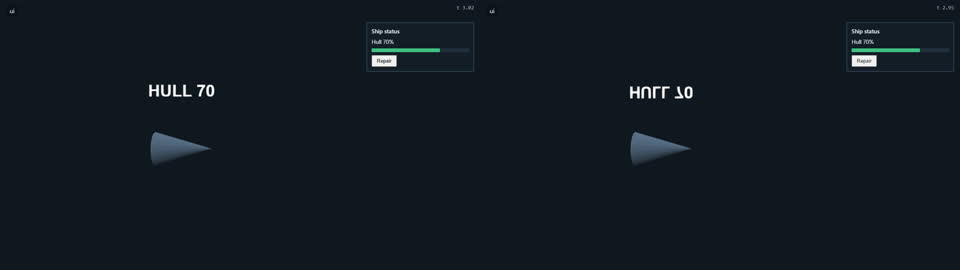
input
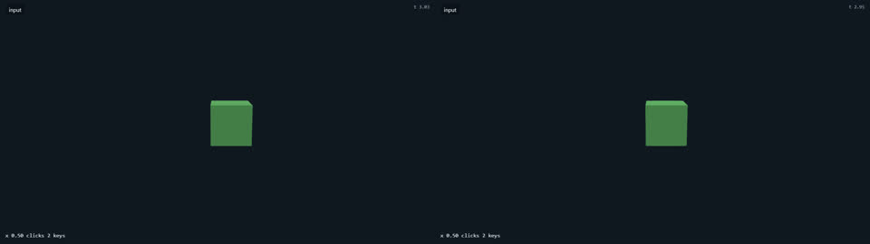
timers
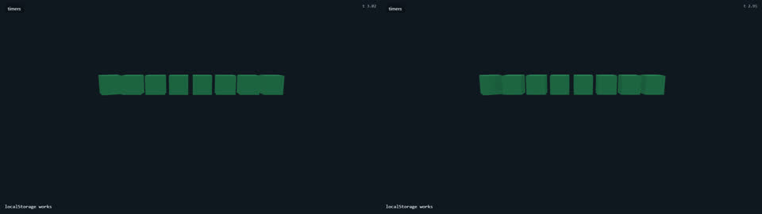
audio
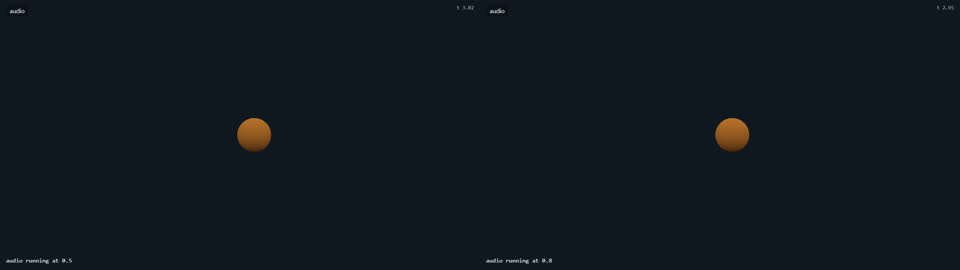
orbit-demo
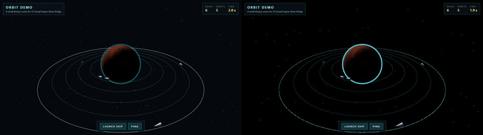
threejs-fps
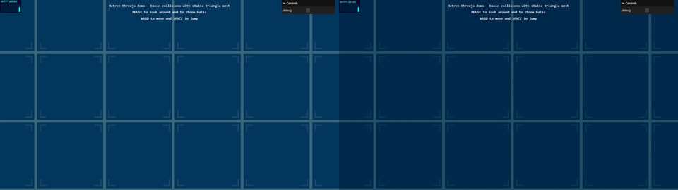
threejs-pointerlock
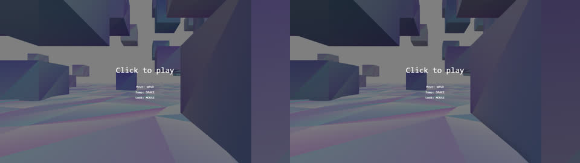